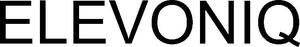

Trade Mark Journal No.2025/032 8 August 2025
WO0000001866272 (6,7,9,11,19,35,37,38,42,45)
Office of origin: Germany
Date of International Registration:21 February 2025
Date of designation in the UK:
21 February 2025

International priority date claimed: 19 November 2024
(Germany)
- Class 6
- Metal materials for building and construction; buildings, transportable, of metal; non-electric cables and wires of common metal; metal hardware; metal ventilation channels; air grilles of metal; airlock chambers of metal; air pipes of metal for buildings; metal ventilation ducts for buildings and elevator shafts; metal ventilation shafts for buildings and elevator shafts; metal ventilation louvres for buildings and elevator shafts; ducts of metal for ventilating and air-conditioning installations; metal ventilation grilles for installation in buildings and elevator shafts; valves and dampers [other than as parts of machinery] of metal for ventilation and smoke extraction; conveyor system protective closures, fire protection closures and smoke protection closures, all made of metal; smoke outlets [vents] of metal; flaps, especially louvre flaps, made of metal; flap valves of metal; manhole covers and manhole frames of metal; elevator and lift shaft parts made of metal; parts and accessories for all the aforesaid goods, included in this class.
- Class 7
- Air filters [engine parts]; exhausters being suction ventilators; parts and accessories for all the aforesaid goods, included in this class.
- Class 9
- Electronic surveillance apparatus; electronic sensors; safety devices for elevators and elevator shafts; electrical and electronic measuring, control and regulating devices for elevators, escalators and other conveyor systems; electrical and electronic control devices for elevators, escalators and other conveyor systems; remote monitoring apparatus; remote control apparatus; measuring, detecting, monitoring and controlling equipment; data processing apparatus; smoke detectors; smoke sensors; electric smoke sensors; combination carbon monoxide and smoke detectors; hygrometers; fire sensors; fire control apparatus; fire protection apparatus; fire detectors; fire detection software; temperature monitors for industrial use; electronic temperature monitors, other than for medical use; electronic temperature recorders, other than for medical use; temperature sensors; temperature feedback units; regulating, signalling, control and checking apparatus, devices and instruments, included in this class; electronic control systems for firestop systems, fire protection apparatus and smoke control systems; remote controls for firestop systems, fire protection apparatus and smoke control systems; infrared detectors; pyroelectric infrared sensors; active and passive infrared sensors; infrared devices; temperature devices; air quality monitoring devices; air quality sensors; computer and application software; computer programmes for data processing; parts and accessories for all the aforesaid goods, included in this class.
- Class 11
- Smoke suction systems; flues; fume extractors; fans for fume extractors; ventilating hoods for smoke; filters for fume extractors; fittings for smoke exhaust ducts; telescopic combination flues; fume destructing hoods; sliding plate smoke dampers; draught regulators for preventing the spread of smoke; extractor units [ventilation]; filters for air conditioning; electrically powered air blowers for ventilation purposes; cyclones [air purifying apparatus]; industrial ventilation apparatus; air purifying apparatus; air-cleaning apparatus; separators for scrubbing air; hoods for ventilating apparatus; air impellers for ventilation; ventilation [air-conditioning] installations and apparatus; flues for ventilating apparatus; evaporative air cooling units; air curtains for ventilation; apparatus and installations for ventilating; dampers for ventilating installations; air cleaning filters [parts of air cleaning machines or installations]; air purifying devices and machines; extractors [ventilation or air conditioning]; flues for ventilating apparatus; electrostatic precipitators for cleaning air; motorised fans for ventilation; ventilation [air-conditioning] devices and machines; vent covers [parts of air conditioning installations]; ventilation grilles being parts of extractor fans; electrically powered blowers for ventilation; sliding plate fire dampers; heating, ventilating, and air conditioning and purification equipment (ambient); draught regulators to prevent or inhibit the spread of gases, fire, flames, vapours, smoke as parts of air conditioning and ventilation systems; heating, cooling, drying and ventilation equipment; ventilating fans; equipment and systems and installations consisting thereof for air treatment [ventilation], degassing, filtering and smoke extraction, each included in this class; smoke extraction hoods; supply and exhaust air devices, mainly made of aluminium and/or plastic and/or glass, as parts or accessories of ventilation systems, mainly panels, cover caps, cover frames, flaps and louvre flaps; parts and accessories for all the aforesaid goods, included in this class.
- Class 19
- Non-metallic air vents for buildings; louvre vents (non-metallic -) for buildings; ventilator flaps (non-metallic -) for buildings; air ducts of non-metallic materials for buildings; non-metallic air ducts for buildings; glazing (non-metallic -) having fire resistant properties; fire protection screenings (non-metallic -) for electric cables; fire protection screenings (non-metallic -) for electric ducts; valves and dampers [other than as parts of machines], not of metal, for ventilation or smoke extraction in buildings; parts and accessories for all the aforesaid goods, included in this class.
- Class 35
- Advertising; business management; business organization; business administration; clerical services; negotiation and mediation of contracts for third parties; negotiation of commercial transactions for third parties; business acquisitions; customer acquisition; business acquisitions consultation; statistical analysis and reporting; business data analysis services; analysis of business information; analysis of business management systems; assessment analysis relating to business management; professional business consultancy; advisory services for business management; cost-price analyses; business file management; business file management; business records management; accounting, in particular financial reporting and consulting related to financial reporting; collection of data; compilation and systemization of information into computer databases; computerized file management; data processing services [office functions]; computerized file management; data processing; retail and wholesale services, including via the internet and via teleshopping programs as well as online or mail order services via catalogues relating to metal materials for building and construction, transportable buildings of metal, non-electric cables and wires of common metal, metal hardware, metal ventilation channels, air grilles of metal, airlock chambers of metal, air pipes of metal for buildings, metal ventilation ducts for buildings and elevator shafts, metal ventilation shafts for buildings and elevator shafts, metal ventilation louvres for buildings and elevator shafts, ducts of metal for ventilating and air-conditioning installations, metal ventilation grilles for installation in buildings and elevator shafts, valves and dampers [other than as parts of machinery] of metal for ventilation and smoke extraction, conveyor system protective closures, fire protection closures, smoke protection closures, all made of metal, smoke outlets [vents] of metal, flaps, louvre flaps, flap valves, manhole covers, manhole frames, elevator and lift shaft parts, all made of metal; retail and wholesale services, including via the internet and via teleshopping programs as well as online or mail order services via catalogues relating to air filters and exhausters being suction ventilators; retail and wholesale services, including via the internet and via teleshopping programs as well as online or mail order services via catalogues relating to electronic surveillance apparatus, electronic sensors, safety devices for elevators and elevator shafts, electrical and electronic measuring, control and regulating devices for elevators, escalators and other conveyor systems, electrical and electronic control devices for elevators, escalators and other conveyor systems, remote monitoring apparatus, remote control apparatus, measuring, detecting, monitoring and controlling equipment, data processing apparatus, smoke detectors, smoke sensors, electric smoke sensors, combination carbon monoxide and smoke detectors, hygrometers, fire sensors, fire extinguishing systems, fire control apparatus, fire protection apparatus, fire detectors, fire detection software, temperature monitors for industrial use, electronic temperature monitors, other than for medical use, electronic temperature recorders, other than for medical use, temperature sensors, temperature feedback units, regulating, signalling, control and checking apparatus, devices and instruments, electronic control systems for firestop systems, fire protection apparatus, smoke control systems, remote controls for firestop systems, fire protection apparatus and smoke control systems, infrared detectors, pyroelectric infrared sensors, active and passive infrared sensors, infrared devices, temperature devices, air quality monitoring devices, air quality sensors, computer software, application software and computer programmes for data processing; retail and wholesale services, including via the internet and via teleshopping programs as well as online or mail order services via catalogues relating to smoke suction systems, flues, fume extractors, fans for fume extractors, ventilating hoods for smoke, filters for fume extractors, fittings for flues, telescopic combination flues, fume destructing hoods, sliding plate smoke dampers, draught regulators for preventing the spread of smoke, draught regulators for preventing the spread of smoke, extractor units [ventilation], filters for air conditioning, electrically powered air blowers for ventilation purposes, cyclones [air purifying apparatus], industrial ventilation apparatus, air purifying apparatus, air-cleaning apparatus, separators for scrubbing air, hoods for ventilating apparatus, air impellers for ventilation, ventilation [air-conditioning] installations and apparatus, flues for ventilating apparatus, evaporative air cooling units, air curtains for ventilation, apparatus and installations for ventilating, dampers for ventilating installations, air cleaning filters [parts of air cleaning machines or installations], air purifying devices and machines, extractors [ventilation or air conditioning], flues for ventilating apparatus, electrostatic precipitators for cleaning air, motorised fans for ventilation, ventilation [air-conditioning] devices and machines, vent covers [parts of air conditioning installations], ventilation grilles being parts of extractor fans, electrically powered blowers for ventilation, sliding plate fire dampers, heating, ventilating, and air conditioning and purification equipment (ambient), draught regulators to prevent or inhibit the spread of gases, fire, flames, vapours, smoke as parts of air conditioning and ventilation systems, heating, cooling, drying and ventilation equipment, ventilating fans, equipment and systems and installations consisting thereof for air treatment [ventilation], degassing, filtering and smoke extraction, smoke extraction hoods, supply and exhaust air devices, mainly made of aluminium and/or plastic and/or glass, as parts or accessories of ventilation systems, mainly panels, cover caps, cover frames, flaps and louvre flaps; retail and wholesale services, including via the internet and via teleshopping programs as well as online or mail order services via catalogues relating to non-metallic air vents for buildings, louvre vents (non-metallic -) for buildings, ventilator flaps (non-metallic -) for buildings, air ducts of non-metallic materials for buildings, non-metallic air ducts for buildings, glazing (non-metallic -) having fire resistant properties, fire protection screenings (non-metallic -) for electric cables and fire protection screenings (non-metallic -) for electric ducts, valves and dampers [other than as parts of machines], not of metal, for ventilation or smoke extraction in buildings; information and advisory services related to all the aforementioned services.
- Class 37
- Construction; installation, maintenance, servicing and repair of elevators, escalators and other conveyor systems; installation, maintenance, servicing and repair of elevator parts and elevator shaft parts, especially louvre flaps; information and advisory services in connection with all the aforementioned services.
- Class 38
- Telecommunication services; providing user access to internet portals and platforms; telecommunication services provided via internet platforms and portals; provision of access to an electronic marketplace [portal] on computer networks; transmission of digital information; information and advisory services in connection with all the aforementioned services.
- Class 42
- Scientific and technological services and research and design relating thereto; industrial analysis; industrial research; industrial design; quality control; authentication services; design, development, programming and implementation of computer hardware and software; rental of software; software as a service [SaaS]; rental of computer hardware; IT consulting; IT consultancy, advisory and information services; conducting technical project studies; conducting technical project studies; technical inspection of elevators, escalators and other conveyor systems; technical monitoring of elevators, escalators and other conveyor systems; technical assessment of lifts, escalators and other conveyor systems with regard to possible hazards; analysis of product development; digitization of documents; none of the aforementioned services relating to software 4GL technology; hosting platforms on the internet; design and development of systems for data input, output, processing, display and storage; research and development in the field of elevators, escalators and other conveyor systems; information and advisory services in connection with all the aforementioned services.
- Class 45
- Security services for the protection of physical goods and individuals; safety assessments of elevators, escalators and other conveyor systems; security guard services for elevators, escalators and other conveyor systems; physical security consultancy; legal services relating to the negotiation and drafting of contracts, in particular the preparation of awardable service contracts; creation of concepts for compliance with the operator obligations of elevators, escalators and other conveyor systems and summary of operator obligations and instructions for action to ensure proper operation and to avoid hazards; preparing of emergency call procedures; information and advisory services in connection with all the aforementioned services.
ElevonIQ GmbH
Representative: Eversheds Sutherland (Germany) Rechtsanwälte Steuerberater Solicitors Partnerschaft mbB, Brienner Str. 12, 80333 München, GERMANY